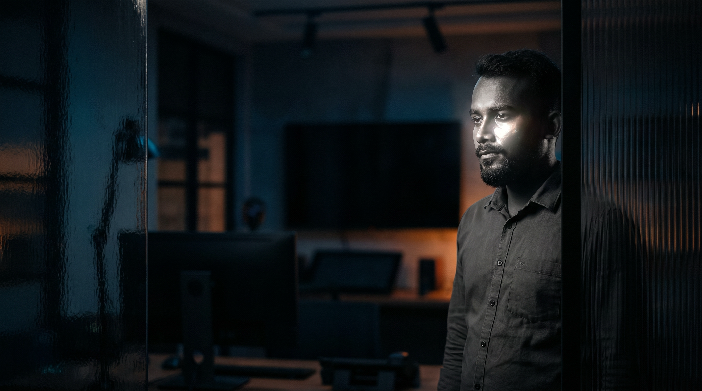
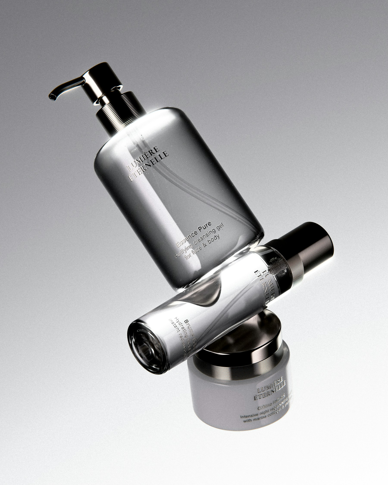
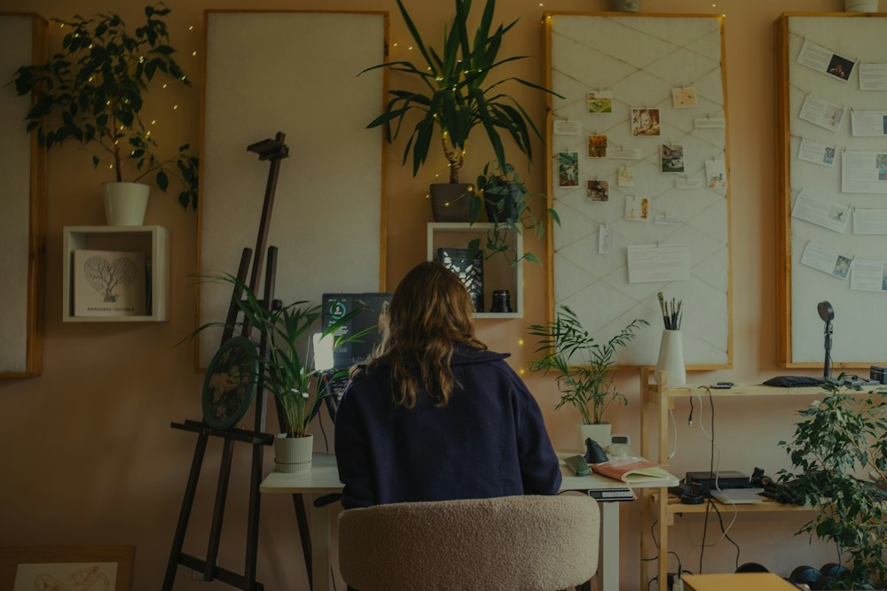

i’m arif
INDEPENDENT DESIGNER / 2026
SEE IN LINKEDIN →Sr. UI/UX Designer | AI Products, ERP & SaaS Dashboard, Web & Mobile Design and Design System Expert.
See selected workSTRATEGY × IDENTITY × EXPERIENCE
Clarity that people can feel.
01 / A studio perspective
INDEPENDENT / CURIOUS / DETAIL-DRIVEN

FIG. 01 / MATERIAL STUDY / STUDIO ARCHIVE
Make it clear.Make it matter.Make it last.

I’m Arif, an independent designer helping ambitious founders turn early ideas into identities people understand and remember.
Every project starts with a good question, a clear direction, and a close working relationship. I keep the team small so the thinking stays sharp.
Read the StoryA focused practice. A human perspective.
03 / Project collection
A selection of identities, interfaces, and worlds built around one simple belief: good design should move people forward.
Ideas worth
following through.
SELECTED WORK / 2024—2026

LUMEN
Lumen — A clearer skincare world.
STRATEGY / IDENTITY / PACKAGING / E-COMMERCE

Further explorations
Loose ideas, visual experiments, and smaller pieces made between larger projects.
Browse the archive03 / How I work
A practical, open process that gives the idea space to become the right thing.
Think deeply.
Make clearly.
Find the signal.
We unpack the ambition, the audience, and the tension at the centre of the brief. The goal is a shared understanding of what matters.
CONVERSATION / RESEARCH / FOCUSChoose a direction.
I turn the insight into a distinct creative route. We test the idea, sharpen the language, and commit to what feels most true.
POSITIONING / CONCEPT / DIRECTIONMake it useful.
I build the system, refine every detail, and leave your team with something clear enough to carry forward.
DESIGN / SYSTEM / HANDOVER04 / Design approach
Build from
0 to 100%
I connect strategy, language, and visual craft so your audience knows what you stand for — and why it matters.
See the approachFind the useful truth inside the idea, then give it a voice people can remember.
Research / Positioning / Verbal identityCreate a visual language with enough character to be noticed and enough structure to grow.
Logos / Design systems / PackagingMake websites and interfaces feel simple, intentional, and unmistakably yours.
Websites / User experience / BuildExtend the idea through imagery, editorial, and moments that give the brand a human edge.
Photography / Editorial / Campaigns

ARIF / THE STUDIO, MYMENSINGH / 2026
05 / Behind the work
One practice.
Many ways forward.
I’m Arif, a designer interested in the space between a clear idea and the world it needs to live in.
I work independently with founders, teams, and organisations who want more than a polished surface. Together, we find the story, build the system, and make something that can keep working after launch.
Personally led,
Openly made.
A CLOSE CIRCLE OF WRITERS, BUILDERS, IMAGE-MAKERS & CREATIVE PARTNERS.
A working belief
The best design gives people a clear place to begin — then leaves enough room for them to make it their own.
06 / Selected moments
Small moves.
Real momentum.
A few moments from the work — the decisions, systems, and details that help a good idea travel further.
SELECTED CONCEPTS / INDEPENDENT CREATIVE EXPLORATIONS
07 / Field notes
Short observations on design, technology, and the everyday details that make ideas stronger.
Notes from
the process.
Read the notes
08 / Let’s make something
NOW BOOKING NEW PROJECTS
What are youbuilding next?
Have a question, a rough idea, or a project ready to move?
Tell me where you want to go.
We’ll find the next useful step together.
© ARIF | 2026
PRODUCT DESIGN / UIUX / CREATIVE TECHNOLOGY